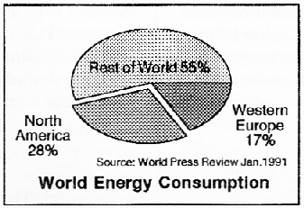
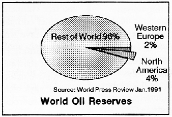
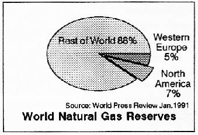
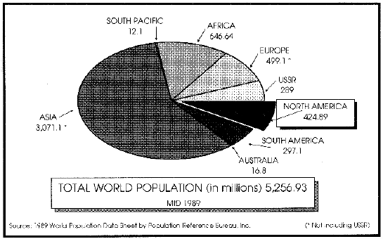
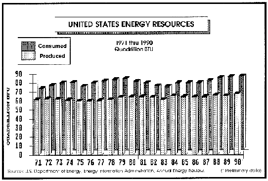

|
|
Search |
Published in:
...The U.S. spends more than $350 billion a year on various educational programs. In spite of this, 25% of school age children can neither read at a satisfactory level or write correctly. Since 1985, every fourth student in high school has failed to earn a diploma and has dropped out of high school. Every year, 2 million Americans leave school without having learned to read and write.
...The Gulf War has again emphasized the uneven distribution of the world's energy resources, in this case oil and natural gas. The economic independence of the "advanced countries" is threatened, hence the bloodshed. North America, which accounts for 28% of world energy consumption, has only about 4% of the world's oil reserves and about 7% of its natural gas reserves. Western Europe accounts for 17% of energy consumption with only 2% of the oil and only about 5% of the gas.
  
...Along the border between the U.S. and Mexico, on the Mexican side, there are 1,300 U.S. owned factories, producing everything from hospital gowns, saxophones, radar detectors, overhead garage door openers, chain saws, and so it goes on. Some very recognizable names are involved: ITT, IBM, Rockwell United Technologies, Kodak, Memorex. What is the attraction? Wages, with a top rate of $7.50 per day and the state of the Mexican peso. In 1981, the exchange rate was 25 pesos to the dollar; now it is 2,500. This makes locating in Mexico a very attractive proposition. No wonder there is now a frenzy of activity to complete a free trade pact between the U.S.A. and Mexico.
...From figures quoted in The Washington Spectator, it appears that as of the end of 1990 the richest 1% of the population had an income after taxes that equaled the total income of the bottom 40%. In actual numbers this means that 2.5 million Americans amassed the same income as did 100 million of America's poorest. From the same source, we learn that revolving credit went from $54.9 billion, outstanding in 1980, to $215.8 billion as of September 1990. Car loans rose from $111.9 billion, outstanding in 1980, to $285.2 billion at the end of September 1990. As the economy slows down, how much of this will become uncollectable and add to the already bleak outlook for so many of the nation's banks?
...According to the Center for Disease Control (CDC), 2,268 cases of AIDS in children under 13 have already been reported in the U.S. In addition CDC estimated, HIV infections will reach 20,000 children this year.
...Wars, famines, malnourished children, educational and health problems, poverty, crime, financial problems, unemployment, pollution, the list of symptoms goes on. The point is, that this is what they are, symptoms, all of them an indication of the inability of an obsolescent Price System to cope with a host of related problems largely of a technological nature.
...We must face up to this fact, that they are merely symptoms, and the continued futility of trying to maintain this outmoded method of social operation will only result in those symptoms becoming more serious, resulting in more misery for all. With the installation of a functional form of government, namely a Technate, those problems could be addressed and solutions found.
More next issue.
 